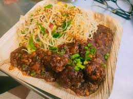
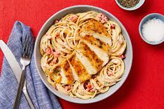
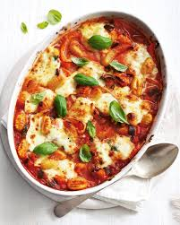

chicken garlic Noodles +Manchurian353 Ratings150Rs |500 ML| Serve 1| |Chicken Manchurian Noodles ... Combine the chicken pieces, ginger-garlic paste, salt, turmeric, chili powder, cornstarch and egg together.| |
 |
chicken Mancow soup482 Ratings230 Rs |500 ML| Serve 1| | A Chineese comforting style hot and spicy thick chicken soup topped with cripsy noodles | |
 |
spaghetti aglio olio chicken367 Ratings670 Rs |Medium spicy | Serve 1| | Chicken spaghetti aglio olio made with grlic , extra virgin olive oil,parsley and black olives | |
 |
Baked potato gnochi48 Ratings525Rs |500 ML| Serve 1| | Classic potato gnocchi baked with tomato sauce and mozzerello| |
 |